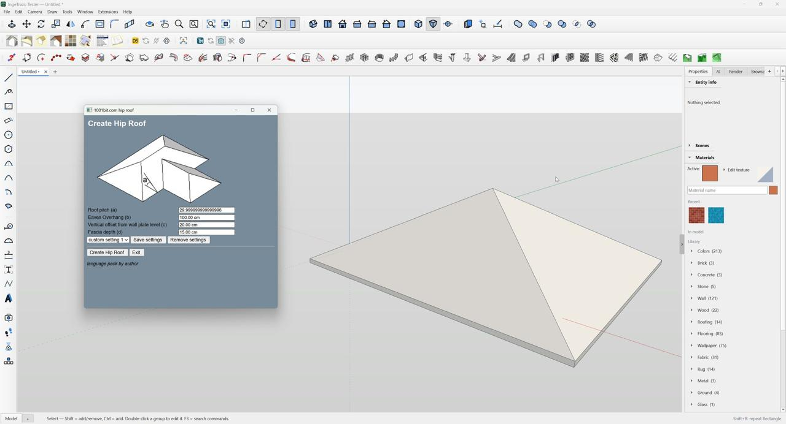

Geometry ownership
Some nested or split edits can place faces in the wrong group or leave generated geometry disconnected.
ACTIVE INVESTIGATIONOpen compatibility project
STATUS Needs tuning
An experimental adapter exploring how SketchUp Ruby extensions can work inside IngeTrazo. It already runs a useful set of tools, but geometry, ownership and document behavior still need careful tuning.
Experimental software · not affiliated with SketchUp or plugin authors

REAL TEST SESSION 01 / 1001BITCurrent checkpoint
The adapter translates a slice of SketchUp’s Ruby interface into IngeTrazo geometry and tools. Recent bounded checks cover the adapter’s core behavior plus selected 1001bit and open-source workflows. Passing those checks does not mean every command, model, or plugin works.
A test count describes the specific cases run; it is not a compatibility percentage.
Where help matters
Failures are part of the test plan. Clear reports and small, reproducible fixes will move this forward.
Some nested or split edits can place faces in the wrong group or leave generated geometry disconnected.
ACTIVE INVESTIGATIONUnit changes during startup, reset or queued plugin callbacks can leave tools using stale dimensions.
KNOWN RACESelected Bevel and planar Cut and Fill workflows remain incomplete. Some roof output still has open boundaries.
MORE CASES NEEDEDEncrypted RBE extensions are not supported. A SketchUp-only API or runtime requirement can also prevent a plugin from running.
OUT OF SCOPE TODAYHelp tune the adapter
Issues and pull requests are welcome. A small reproducible example helps more than a broad “doesn’t work”: name the plugin and version, list the steps, and say what you expected and what happened.